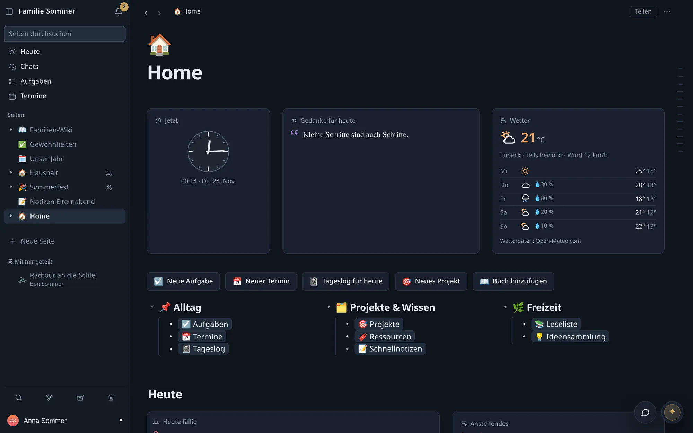

เขียนตำนานของคุณเอง
เซิร์ฟเวอร์ของคุณเองสำหรับหน้า แชท และการโทร
Saga รวมหน้า ฐานข้อมูล แชท การโทร ปฏิทิน และงานไว้บนเซิร์ฟเวอร์ของคุณเอง สำหรับครอบครัว ชมรม หรือทีม พร้อมแอปสำหรับมือถือและคอมพิวเตอร์
- โดเมนเดียว พอร์ต 443 เท่านั้น
- Docker Compose
- แชทและการโทรเข้ารหัสแบบต้นทางถึงปลายทาง

- หน้า
- ฐานข้อมูล
- แชทเข้ารหัสต้นทางถึงปลายทาง
- โทรแบบกลุ่ม
- การเชื่อมต่อระหว่างเซิร์ฟเวอร์
- แก้ไขร่วมกันแบบสด
- วิดเจ็ต
- ผู้ช่วย AI
- ปฏิทิน
- สำรองข้อมูลแบบเข้ารหัส
- Web · iPhone · iPad · Android · Mac · Linux
- AGPL-3.0
ใหม่ใน Saga 2.5
บทที่ยิ่งใหญ่ที่สุดเท่าที่เคยมี
ตอนนี้การโทรวิ่งผ่านโหนดในตัว ตัวแก้ไขทำงานร่วมกับคนอื่นได้แบบสด และแชททำได้มากขึ้นอีกเยอะ รวมถึงหน้าย่อย ตราประทับ ภาพปก และวิดเจ็ตสำหรับหน้าของคุณ
เขียนร่วมกันแบบสด
ตัวแก้ไขเริ่มต้นตัวใหม่ (Tiptap) แสดงสิ่งที่คนอื่นกำลังพิมพ์และเคอร์เซอร์ของพวกเขาทันที เมื่อผู้ดูแลระบบเปิด การแก้ไขพร้อมกันแบบสด ใช้ได้แม้กับคนบนเซิร์ฟเวอร์ที่เชื่อมต่อกัน
- กล่าวถึง บุคคล วันที่ และการเตือนด้วย @
- บล็อกซิงค์: เนื้อหาเดียวกันแสดงได้หลายที่
- ตาราง โค้ด สูตรคณิตศาสตร์ Mermaid คอลัมน์ และสื่อ ได้ในเนื้อหาโดยตรง
หน้าย่อยในหน้า
หน้าย่อยแสดงอยู่ในหน้าหลักของมัน เป็นรายการหรือแกลเลอรีพร้อมภาพปก
ตราประทับเป็นไอคอน
ตราประทับ Saga 36 แบบ 3 สี ให้เลือกคู่กับอีโมจิ ใช้กับหน้า ฐานข้อมูล และแถว
แกลเลอรีภาพปก
ภาพเอลฟ์ของ Saga 100 ภาพใน 8 กลุ่ม และภาพปกแบบสุ่มสำหรับหน้าใหม่
วิดเจ็ตและแผนภูมิ
วิดเจ็ตโฉมใหม่ ทั้งนับถอยหลัง ความคืบหน้า ตัวเลขสำคัญ นิสัย และสภาพอากาศ พร้อมแผนภูมิจากฐานข้อมูล
ย้ายมาง่าย
นำเข้าจาก Notion, Trilium, Markdown/Obsidian และ CSV ส่งออกเป็น CSV และ Markdown
แอป Mac ครอบเว็บ
แอปเดสก์ท็อปสำหรับ Mac แสดงหน้าเว็บของเซิร์ฟเวอร์คุณ พร้อมการแจ้งเตือน วิดเจ็ต และอุโมงค์สำหรับการโทร
การเปลี่ยนแปลงทั้งหมด (ภาษาเยอรมัน) อัปเกรดจาก 2.3/2.4 (ภาษาอังกฤษ)
แชทและการโทร
คุยกันได้ โดยไม่มีใครแอบฟัง
แชทและการโทรเข้ารหัสแบบต้นทางถึงปลายทาง เซิร์ฟเวอร์ของคุณเก็บข้อความไว้ แต่อ่านไม่ได้ – ผู้ดูแลระบบก็อ่านไม่ได้เช่นกัน
โทรผ่าน Gjallarhornทดลอง
Saga มีโหนดสื่อของตัวเองมาให้ ทำงานหลัง reverse proxy ใดก็ได้ที่รองรับ WebSocket ผ่านที่อยู่ Saga ตามปกติ ไม่ต้องมีชื่อที่สองและไม่ต้องเปิดพอร์ตเพิ่ม
- โทรแบบตัวต่อตัวและแบบกลุ่ม ทั้งวิดีโอ เสียง และแชร์หน้าจอ ในรุ่นแรกรองรับได้ถึง 4 คนหรือ 4 อุปกรณ์
- เปลี่ยนสายตัวต่อตัวเป็นสายกลุ่ม ได้โดยไม่ต้องวางสาย
- ดึงคนเข้าสาย ได้แม้ไม่ได้อยู่ในแชท ใครที่ไม่รับสายจะแสดงใน “ไม่ได้อยู่ในสาย” พร้อมปุ่ม “เรียกอีกครั้ง”
- สลับหรือเพิ่มอุปกรณ์: ย้ายสายจากมือถือไปยังแล็ปท็อป หรือเพิ่มแล็ปท็อปเข้ามาเพื่อแชร์หน้าจออย่างเดียว
- เข้ารหัสแบบต้นทางถึงปลายทาง แม้จะผ่านโหนด
Gjallarhorn ยังเป็นฟีเจอร์ทดลองใน 2.5 ส่วน Safari และเบราว์เซอร์บน iPhone/iPad ยังโทรแบบตรงหรือผ่าน TURN ขณะที่แอปมือถือและแอป Mac ใช้อุโมงค์ผ่านที่อยู่ Saga


แชทที่ทำได้มากกว่า
แชทแบบใหม่ (ระดับ 3) เปิดเป็นค่าเริ่มต้นแล้ว ยังคงเข้ารหัสแบบต้นทางถึงปลายทาง และมีทุกอย่างที่ใช้ในชีวิตประจำวัน
- รีแอ็กชัน ตอบกลับ และแก้ไขข้อความ จัดรูปแบบ และ @กล่าวถึง
- ข้อความเสียง ยาวได้ถึง 15 นาที
- ปักหมุดข้อความและแชท ปิดเสียงตามเวลาที่กำหนด ทำเครื่องหมายว่ายังไม่อ่าน
- กลุ่มที่มีผู้ดูแล รูปและคำอธิบายกลุ่ม รายชื่อติดต่อ และการรายงานถึงผู้ดูแลระบบ


การเชื่อมต่อระหว่างเซิร์ฟเวอร์
หลายเซิร์ฟเวอร์ หนึ่ง Saga
เชื่อมเซิร์ฟเวอร์ของคุณกับเซิร์ฟเวอร์ Saga ของครอบครัว ชมรม หรือเพื่อน แชร์หน้า แชท และโทรข้ามเซิร์ฟเวอร์ได้ – เนื้อหายังคงอยู่กับเจ้าของ และทุกคำขอระหว่างเซิร์ฟเวอร์มีการลงลายมือชื่อ
- แชร์หน้า
- แก้ไขร่วมกัน
- แชท
- การโทร
- สมุดที่อยู่
- ลงลายมือชื่อ (Ed25519)
ความสามารถ
ทุกสิ่งที่คุณอยากเก็บไว้ ในที่เดียว
ไม่ต้องใช้คลาวด์ ไม่ต้องสมัครสมาชิก ทุกคนมีพื้นที่ส่วนตัวของตัวเอง และแชร์เฉพาะสิ่งที่อยากแชร์
วันนี้
หน้าเริ่มต้นต้อนรับคุณด้วยสิ่งที่กำลังจะมาถึง งานที่ถึงกำหนด นัดหมาย หน้าที่เพิ่งเปิด และไทล์ของบริการต่าง ๆ ซึ่งแสดงตามกลุ่มของคุณ

หน้า
บล็อก หน้าย่อย เทมเพลต เวอร์ชัน ความคิดเห็น และส่งออกเป็น Markdown พร้อมค้นหาด่วนและแผนผังหน้า
ฐานข้อมูล
ตาราง บอร์ด รายการ แกลเลอรี ปฏิทิน ไทม์ไลน์ และแผนภูมิ พร้อมสูตร การสรุปค่า ความสัมพันธ์ และตัวกรอง
ปฏิทินและงาน
ปฏิทิน CalDAV (เช่น Nextcloud, Radicale) และงานจากฐานข้อมูล พร้อมลำดับความสำคัญและการทำซ้ำ
ผู้ช่วย AI
ใช้หรือไม่ก็ได้ เชื่อมกับบริการที่รองรับ OpenAI ตามที่คุณเลือก ตอบคำถามจากหน้าของคุณ บอกแหล่งที่มา และช่วยเขียน
การเชื่อมต่อระหว่างเซิร์ฟเวอร์
เซิร์ฟเวอร์ Saga เชื่อมต่อกันได้ (เฟเดอเรชัน) แชร์และแก้ไขหน้าข้ามเซิร์ฟเวอร์ แชท และโทรหากันได้
แชร์และเผยแพร่
แชร์ให้บุคคลและกลุ่ม (อ่าน แสดงความคิดเห็น แก้ไข) หรือเผยแพร่หน้าให้ทุกคนอ่านได้โดยไม่ต้องมีบัญชี
สำรองข้อมูลและ Nextcloud
สำรองข้อมูลแบบเข้ารหัสทุกวันไปยัง S3 โฟลเดอร์ หรือ Nextcloud และใส่ไฟล์จาก Nextcloud ลงในหน้าได้โดยตรง
LDAP และ SSO
บัญชีภายใน LDAP/Active Directory และ OpenID Connect กำหนดสิทธิ์เข้าถึงบริการผ่านกลุ่ม
ห้าภาษา
หน้าจอและแอปมีภาษาเยอรมัน อังกฤษ สเปน รัสเซีย และไทย เลือกได้ตามบัญชี





ภาพหน้าจอเป็นหน้าจอภาษาเยอรมันของเซิร์ฟเวอร์สาธิต
แอป
ใช้ได้ทุกอุปกรณ์ เหมือนอยู่บ้าน
Saga ใช้งานได้บนเบราว์เซอร์รุ่นปัจจุบันทุกตัว รวมถึงบนมือถือ และยังมีแอปที่เข้าสู่ระบบได้ด้วย QR โค้ด

iPhone & iPad
แอปเนทีฟพร้อมวิดเจ็ต ยังไม่มีใน App Store ต้องบิลด์เอง
Android
แอปเนทีฟเป็นไฟล์ APK จากหน้า Releases บน GitHub สำหรับ Android 8 ขึ้นไป
Mac
แอปเดสก์ท็อปที่ครอบหน้าเว็บ ลงนามและผ่านการรับรองจาก Apple (macOS 26 ขึ้นไป)
Linux
แอป GNOME แบบ RPM (Fedora, RHEL 10) และแบบ Flatpak สำหรับทุกดิสโทร
พร้อมใช้งานในไม่กี่นาที
เซิร์ฟเวอร์ของคุณ กฎของคุณ
Saga ทำงานด้วย Docker Compose จากภายนอกคุณต้องการเพียงโดเมนเดียวและพอร์ต 443 บน reverse proxy ของคุณ การโทรก็ใช้เส้นทางเดียวกัน
# ดาวน์โหลดและตั้งค่า git clone https://github.com/yggdrasil-sh/saga.git && cd saga cp .env.example .env # ใน .env: BASE_URL, SECRET_KEY, POSTGRES_PASSWORD docker compose pull && docker compose up -d # รหัสผ่านผู้ดูแลระบบครั้งแรก docker compose logs saga | grep Admin-Konto # อัปเดตภายหลัง (Saga สำรองข้อมูลให้ก่อน) docker compose pull && docker compose up -d

- เริ่มต้นดึงอิมเมจแล้วเริ่มทำงาน Saga รับที่พอร์ต 8080 ส่วนผู้ดูแลระบบอยู่ที่ 8081 (เฉพาะในเครื่อง)
- วาง proxy ไว้ด้านหน้าโดเมนเดียวที่ใช้ HTTPS บนพอร์ต 443 ชี้มาที่ Saga ใน Nginx Proxy Manager ให้เปิด “Websockets Support” ส่วน Caddy และ Traefik ทำให้เอง
- ตั้งค่าสร้างบัญชี กลุ่ม และบริการในส่วนผู้ดูแลระบบ จะเชื่อม LDAP หรือ SSO ด้วยก็ได้ ในหัวข้อ “การโทร” ปุ่ม “ตรวจสอบตอนนี้” จะทดสอบเส้นทางผ่าน proxy
- เชื่อมต่อแอปเข้าสู่ระบบด้วย QR โค้ดจาก “แอปและอุปกรณ์” เท่านี้ก็เสร็จ
ความปลอดภัยและความเป็นส่วนตัว
ข้อมูลของคุณอยู่กับคุณ
Saga ทำงานบนเซิร์ฟเวอร์ของคุณ ไม่มีการติดตามและไม่มีการส่งข้อมูลการใช้งาน Saga ติดต่อเฉพาะบริการที่คุณตั้งค่าไว้ (และติดต่อ GitHub เพื่อตรวจหาอัปเดต หากคุณต้องการ)
เข้ารหัสแบบต้นทางถึงปลายทาง
แชทและการโทรเข้ารหัสแบบต้นทางถึงปลายทาง ทั้งข้ามเซิร์ฟเวอร์ที่เชื่อมต่อกันและเมื่อผ่านโหนด
เข้าสู่ระบบอย่างปลอดภัย
พาสคีย์และแอปยืนยันตัวตน บังคับ 2FA สำหรับผู้ดูแลหรือทุกคนได้ การลองผิดจะถูกหน่วงเวลา แต่บัญชีไม่ถูกล็อก
สำรองข้อมูลอย่างมีแผน
ทุกวัน เข้ารหัสด้วย age เก็บแบบ 7/4/6 พร้อมทดสอบการกู้คืน และสำรองก่อนอัปเดตทุกครั้ง รวมถึงข้อมูลสำรองส่วนตัวของแต่ละคน
ส่วนผู้ดูแลระบบแยกต่างหาก
ใช้พอร์ตของตัวเอง ค่าเริ่มต้นเข้าถึงได้เฉพาะในเครื่อง พร้อมการเข้าสู่ระบบและการวินิจฉัยของตัวเอง
คุณเป็นคนตัดสินใจ
ปิดการเชื่อมต่อ แชท การโทร และสมุดที่อยู่ได้แยกตามเซิร์ฟเวอร์ ส่วนสถานะการอ่านและ “ออนไลน์” ตั้งได้รายบุคคล
โอเพนซอร์ส
AGPL-3.0 ทุกอย่างอยู่บน GitHub ทั้งเซิร์ฟเวอร์ แอป และเครื่องมือที่ใช้สร้างภาพหน้าจอเหล่านี้
พร้อมเขียนตำนานของคุณเองหรือยัง?
ซอฟต์แวร์เสรีภายใต้ AGPL-3.0 ดาวน์โหลด โฮสต์เอง และทำให้เป็นของคุณ